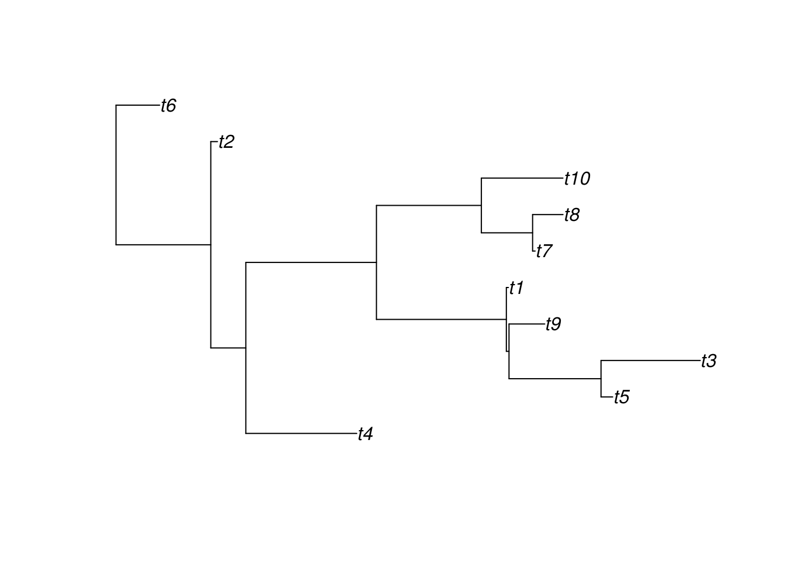

In the following document, we present an example of usage of the widget. First, using the ape package, we create a random phylogenetic tree.
library(ape)
library(jsPhyloSVG)x <- rtree(10)Using the plot.ape method, we can get a nice tree drawn with ape:
plot(x)
Using the jsPhyloSVG function, we can visualize the same tree but using the Javascript library of the same name, jsPhyloSVG:
jsPhyloSVG(write.tree(x), width = 500)jsPhyloSVG(write.tree(x), width = 500, circular = FALSE)